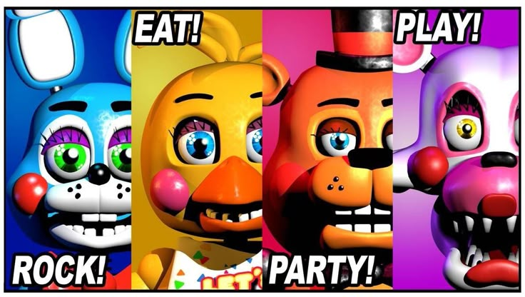
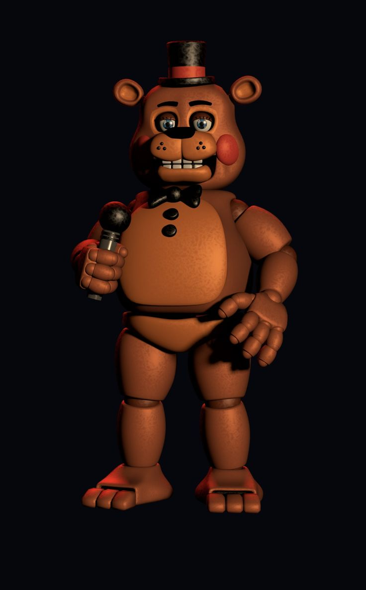
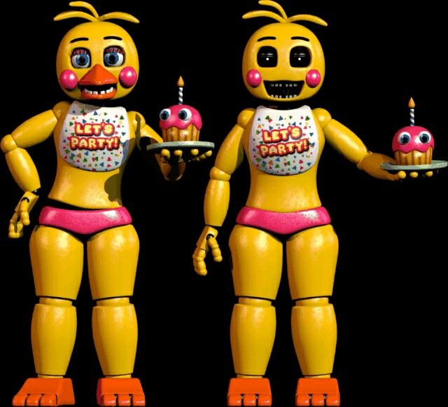
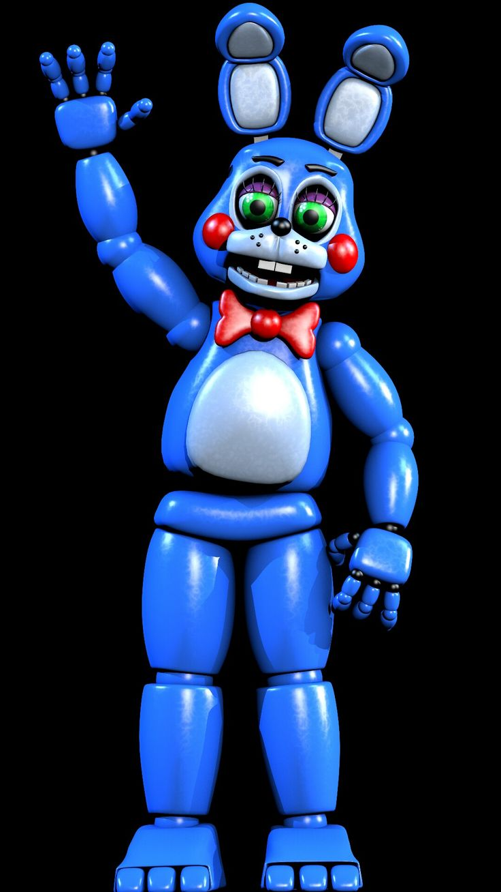
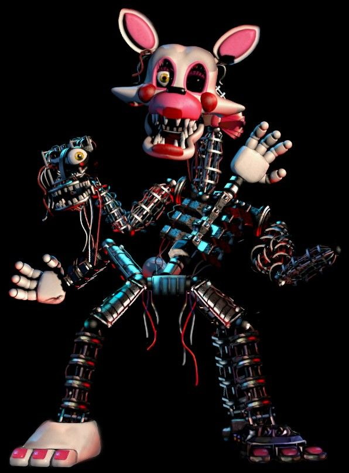
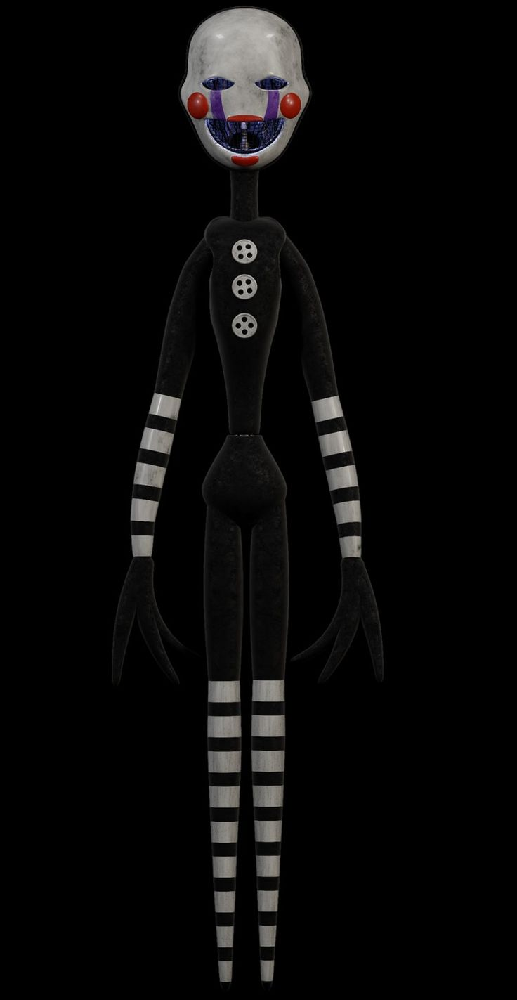
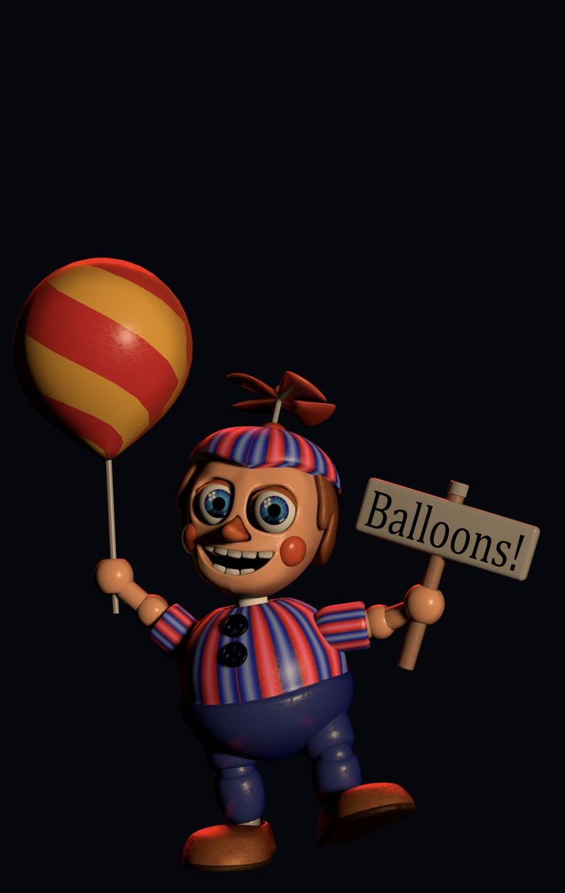
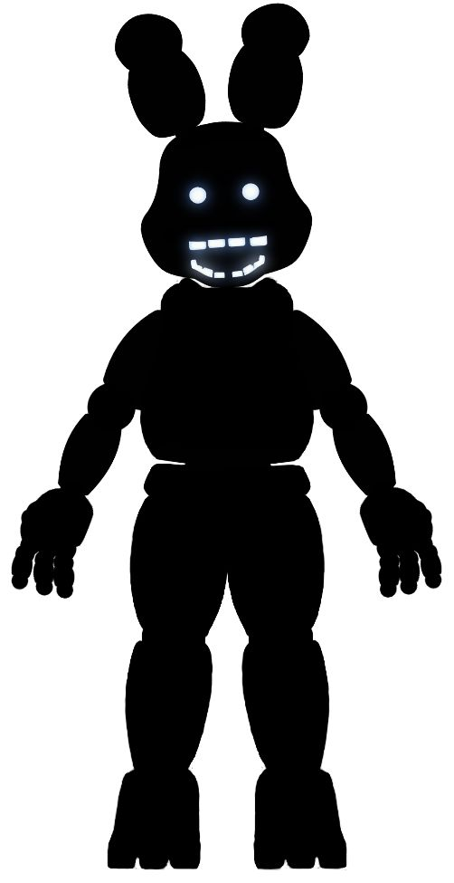
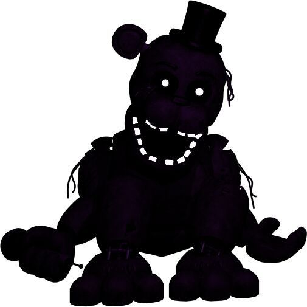
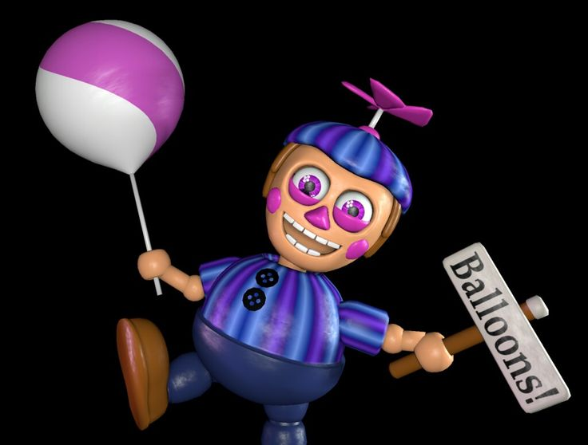

ATENÇÃO
Esta página mostra apenas os personagens do segundo jogo, que é um dos jogos com mais personagens, logo, será dividido em classes dos personagens.
TOYS

"That game was totally rigged!"/"Aquele jogo foi totalmente manipulado!"
Assim como todos os outros animatrônicos de seu modelo, esta versão altamente tecnológica do antigo Freddy Fazbear foi projetada para entrerenimento e proteção dos clientes que entram na pizzaria, alguns dizem que Toy Freddy possui um censor especial para detectar criminosos. Ele aparece no corredor principal, use a máscara de Freddy quando ele entrar na sala.


FNAFWIKI© TODOS OS DIREITOS RESERVADOS

"You won't get tired of dying, will you?"/"Você não vai se cansar de morrer, não é?"
Toy Chica é uma versão mais nova da antiga Chica que se encontra quebrada na sala Parts and Services. Toy Chica é a primeira das duas integrantes femininas do grupo principal dos Toys, sendo também a primeira animatronic que introduziu uma espécie de modificação corporal durante o jogo, pois ela remove tanto seu bico quanto seus olhos após sair do palco. Toy Chica vai até a sala de segurança pelo duto de ventilação oposto ao de Toy Bonnie.

Toy Bonnie é uma versão aprimorada do antigo Bonnie que costumava tocar guitarra em seu lugar. Com seu jeito carismático e energético, Toy Bonnie conquista as crianças mais novas tocando sua guitarra vermelha e andando por aí como um animador após o show do trio principal. Toy Bonnie costuma entrar na oficina pelos dutos de ventilação opostos aos de Toy Chica, colocar a máscara de Freddy é o suficiente para afastá-lo por um tempo.

"Don't be afraid, soon you will look just like me, beautiful!"/"Não tenha medo, logo você será como eu, uma maravilha!"
Mangle um dia foi uma versão aprimorada do antigo Foxy que animava as crianças na Enseada Pirata, mas, pela nova tecnologia de desmonte dos animatrônicos do gênero Toy, as crianças passaram a tratar Mangle como um brinquedo de separar e remontar, deixando-a em seu estado atual sem conserto. Mangle, antigamente Toy Foxy, costuma se pendurar em paredes e no teto, sendo este seu principal meio de locomoção até a oficina principal.

A Marionete(ou Puppet) foi primeiro introduzida a saga por este jogo, onde descobrimos pelos minigames "Give gifts, Give life"(Dê presentes, dê vida) e "SAVE THEM"(SALVE-OS) que ela foi a responsável por dar vida aos animatrônicos, levando a alma das crianças mortas pelo "homem de roxo" até os robôs, deixando-os possuídos. A Marionete fica dentro de sua caixa na câmera 11, e é necessário que o jogador fique constantemente rebobinando a caixa de música para que ela não o ataque.

Este, é Balloon Boy(Garoto dos Balões), ele não faz muita coisa além de ficar rindo nas camêras, mas se ele entrar no duto de ventilação de Toy Bonnie, use a máscara, caso contrário, ele irá roubar a bateria de sua lanterna.
WHITEREDS
Antes o líder da banda, agora é uma alma perdida que carrega a dor de um passado sombrio. Freddy Fazbear, agora chamado de Whitered Freddy após ser substituído, fica na sala de Parts and Services já que seu traje rasgado e seu endo quebrado não são mais úteis para a grande empresa por trás das localizações das pizzarias. Whitered Freddy aparece no corredor central e entra na oficina, o jogador pode usar a lanterna para reiniciar seus sistemas para ganhar tempo, e usar a máscara para enganá-lo e fazer com que vá embora.
"I never thought I'd make it through that vent, but now we are together."/"Eu nunca pensei que eu iria conseguir dair daquela ventilação, mas agora estamos juntos."
Chica, substituída por uma versão muito mais bonita e tecnológica, agora está com os servos de seus braços constantemente travados, suas mãos removidas e sua mandíbula caída, criando uma imagem tenebrosa do personagem que uma vez animava festas. Assim como os Whitereds, Whitered Chica aparece no corredor e pode ser atordoada com a luz da lanterna e com a máscara de Freddy.
"Time to face the consequences of your failure."/"Hora de encarar as consequências de suas falhas."
Withered Bonnie, conhecido popularmente na comunidade brasileira como "O cara sem cara", teve seu rosto e seu braço removido possívelmemte para a construção de Toy Bonnie, tirando assim sua habilidade de tocar guitarra. E, por mais que não possua um rosto nem um braço, Withered Bonnie é um dos animatrônicos mais agressivos, sem ser atordoado pela lanterna e com ataques constantes, os jogadores devem cronometrar o exato momento para colocar a máscara.
A raposa pirata tão amada na década de 80 que hoje se transformou num monstro quebrado, Withered Foxy foi selado na Parts and Services durante o turno diurno, pois durante a noite, Foxy se torna uma verdadeira ameaça. Withered Foxy tem condições de ataque, ele só poderá atacar se você colocar a máscara e não piscar a lanterna em seu olho, dificultando o gerenciamento de tempo do jogador entre piscar a lanterna, se esconder dos outros animatronics e rebobinar a caixa de música da Puppet.
Eastereggs e Segredos
Lembre-se, não é porque algum animatrônico é um personagem secreto que ele seja necessáriamente uma ameaça OU importante para a história.

"Shadow Bonnie"/RWQFSFASXC
Surgiu a partir da agonia do trauma que o coelho(springbonnie) causou nas pizzarias, "Shadow Bonnie", assim batizado pelos fãs devido ao seu nome complexo nos arquivos do jogo, tem chance de aparecer no canto da oficina, desaparecendo pouco tempo depois caso você acenda a lanterna.

"Shadow Freddy"
Shadow Freddy é um personagem secreto assim como Shadow Bonnie, mas que aparece na câmera 08, a Parts and Services. Ele aparece sentado no chão, e desaparece assim que você fechar a câmera. Ele representa a agonia gerada pelos traumas que o urso causou(Fredbear), referenciando diretamente Fredbear's Family Dinner, a pizzaria que originou a franquia.

JJ(pronuncia-se "Jay Jay")
JJ é uma versão feminina de Balloon Boy, ela não tem relevância pra história e também não ataca o jogador, mas tem uma pequena chance de aparecer escondida debaixo da mesa do escritório.